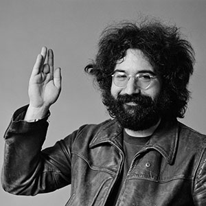

Jerry Garcia
Jerry Garcia was the bands lead guitarist, singer, and songwriter, and is known as the backbone, of the Grateful Dead. Many would attribute Garcia to being the leader of the band, although he would always deny it. Garcia spent a lot of time at Dana Morgan’s Music Store, and bought a banjo from teenage employee Bill Kreutzmann. It didn’t take long before he was employed at the store, and performing in a number of bluegrass bands. After meeting Bob Weir and Pig Pen they created the Warlocks in 1964 which was at first blues-oriented, but transformed styles into psychedelic/experimental rock with accompanied influences from country and folk.